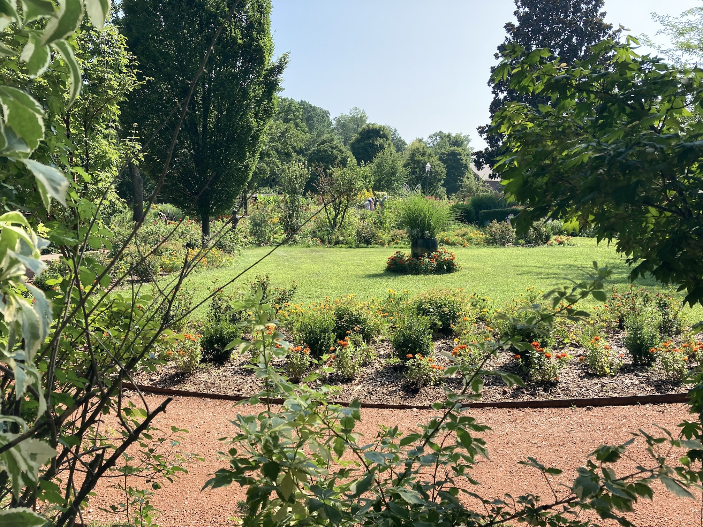
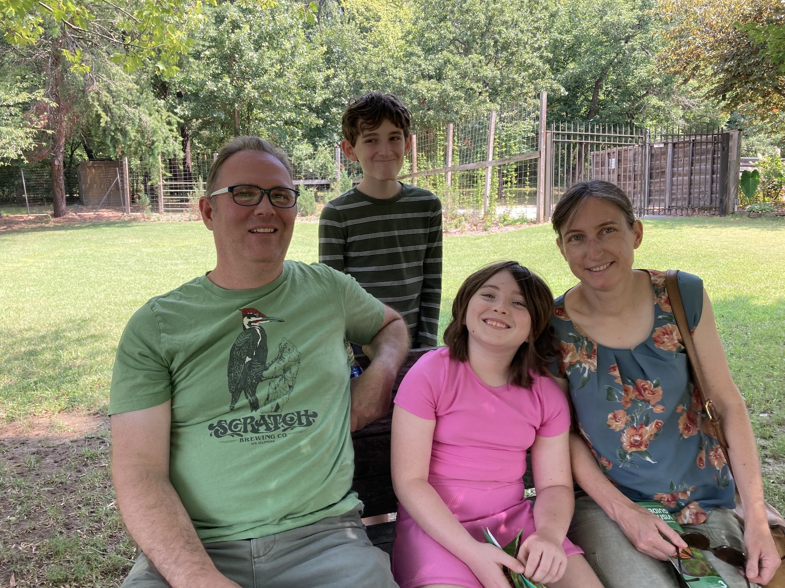
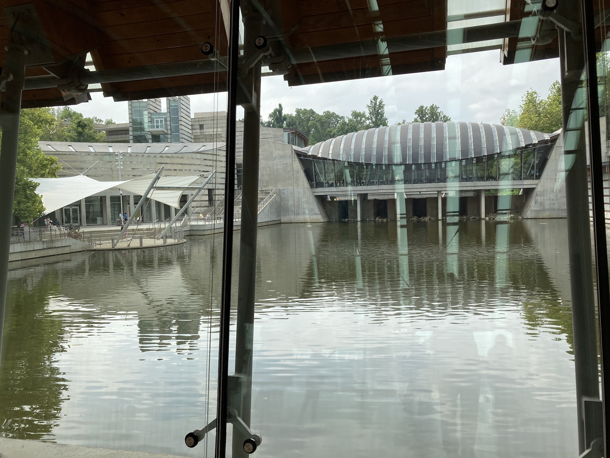
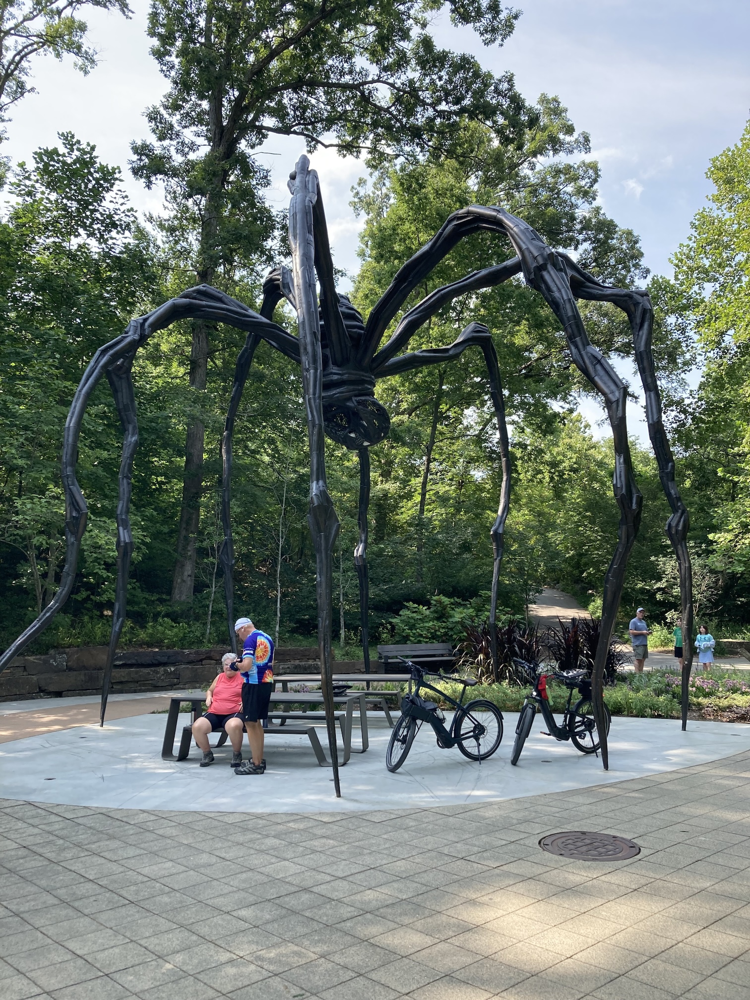

Thursday 31st July saw another day travelling. We managed to get everything packed into Victoria's car by ten o'clock, said goodbye and thank you to Gene and Claudia, and set off for Fayetteville.
Victoria drove south to Harrisonville where we joined Interstate 49. In theory this takes us all the way to Fayetteville, but we stopped in Navada for coffee and then took state road 43 to Joplin, detouring to a state park in the hope that we would see some bison. We didn't, so continued to Joplin for lunch. Route 43 was actually much more interesting than travelling on the highway.
From Joplin we rejoined I49 and continued to Fayetteville, arriving at their rented house at about 4:30. It was the first time that Austin and Juniper had been to Fayetteville and seen their new house. We used Juniper's bedroom (along with all her stuffed toys). She used the lower bunk in Austin's room.
The first day of August was a quieter day, with us not doing much. We were early to bed and late to get up. It rained heavily during the morning, so we mainly sat around. After a late lunch Victoria and Angela went to the supermarket, Juniper did some 'craft' and Austin and I wired the Arduino/strip-board and got the Bluetooth control working. However, I couldn't get the 'serial print' statements to output to the IDE so as to show him what was being sent from the phone to the Arduino.
After that Austin built a car. It worked, but not very well. He then gave up and I had a try, but he had limited blocks since most are built into models that he didn't want to break up. However, I was able to 'drive' my Lego car around the living room.
On Saturday we were a little more active and it wasn't raining. In fact it was sunny and warm all day. Victoria and Brandon went off early to view a couple of houses and we had showers. We were still making sandwich lunches when they returned, but we were soon off to the Botanical Gardens, which are only a five minute drive away.
 The gardens were quite small and the butterfly house had fewer butterflies in it than there were outside. However, it was quite enjoyable. Juniper and Brandon ate their lunch while we were there (at about eleven), but we brought ours home to eat.
After lunch it was time to help assemble shelving and bookcases and empty all the boxes of books. I collapsed the boxes for them to use next time they move! Prior to that I helped Austin build some shelves in his bedroom and then I helped Victoria build some in the garage. They are very sturdy stainless steel affairs. Brandon managed to clear a lot of the garage.
We were all quite tired after that, but later had a nice roast chicken dinner. Paul sent us a couple of photos from Ibiza.
On Sunday we got up to the smell of pancakes being cooked. It was a mainly sunny and not too hot day, so we went to an art museum on the outskirts of Bentonville, about half an hour away.
There were outside tracks with various artworks along the way. We only went a short way, since, although early, it was quite warm and the children have an aversion to walking. If anything, it was too cool inside the very interesting building. It was on multiple levels with interesting roof spans and ponds. We walked around half the galleries, mainly containing 'modern' art, before stopping for lunch under one of the interesting roofs. After that we went into a craft area, where we left Brandon and the children while we walked around the other half of the gallery.
We were home just in time to get a call from Paul and Rowan from their hotel room in Ibiza. They seem to be having a good time. Victoria and Brandon had already gone back out to buy a mattress. One that comes in a box! I managed to check in for our flights in the morning and complete the Canada customs forms. After a good dinner we all played a game about plants.
| Return to Canada &: USA | © David James 2025 Last updated: 29th August 2025 |